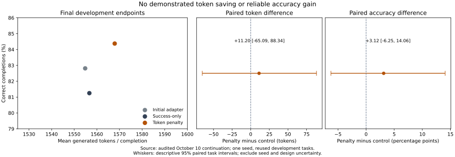
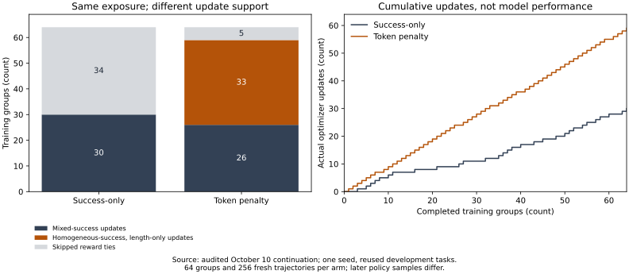
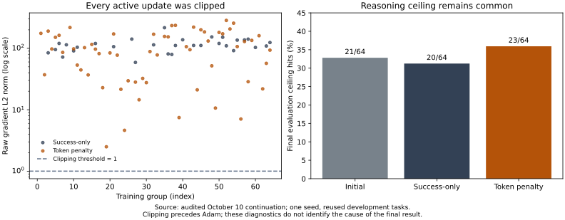

Research notes / October 10, 2026
Reward variation without demonstrated token savings
A token-cost penalty creates more opportunities to update a small coding model. The final evaluation shows an uncertain response.
The finding
More updates.
No demonstrated token savings.
The penalty policy scores 54 of 64 completions correctly, compared with 52 of 64 for success-only. It uses slightly more tokens. Both principal descriptive uncertainty intervals include zero.
Evidence scope One training seed. Reused development tasks. Different deterministic runtime settings between arms. These measurements do not establish generalization or a reliable accuracy gain.
Final outcomes & uncertainty
Compare the final policies on the same 32 development tasks, with two matched samples per task.

The cost difference is +11.20 tokens, with a descriptive 95% task interval of −65.09 to +88.34. Accuracy differs by +3.125 percentage points, interval −6.25 to +14.06. The intervals omit training-seed and design-selection uncertainty. These are final endpoints, not selected checkpoints or a measured Pareto frontier.
Where the extra updates come from
When all four answers are correct, success-only rewards tie. Different lengths can still create an advantage signal under the token penalty.

Inspect the recorded groups
Four trajectories, one update decision.
Positive advantages favor a sampled trajectory; negative advantages discourage it. All first-group trajectories match across arms. Later samples differ as policies diverge, so this inspector is not a shared-trajectory counterfactual.
Clipping & reasoning ceilings
Every active update is clipped before Adam. Reasoning ceilings remain common in both final policies.

Clipping scales raw gradients, but Adam’s moments prevent interpreting that scale as a proportional reduction in the parameter step. These diagnostics do not establish clipping as the cause of the endpoint, or show that a longer reasoning allowance would help.
Look inside the repairs
Four recorded pairs: one illustration from each correctness outcome. Expand a pair to inspect the task, answer, length and reasoning.
01Both incorrectfloor composition · 2,049 / 2,049 tokens
v3-t3-dev-00010 · Sample 1 · Seed 36262015
Answer B Incorrect
2,049 tokens · Ceiling hit
Read recorded reasoning
x=-4, y=6: A: abs((abs((9*(-4)//5 - 3) + 7)//4 - 9) + abs((abs((4*6)//2 - 6) + 3)//5 - 4)) → 9*(-4) = -36 //5 = -7 → abs(-7 -3)=10 → 10+7=17 → 17//4=4 → 4-9=-5 → abs(-5)=5 → 4*6=24 //2=12 → 12-6=6 → abs(6)=6 → 6+3=9 → 9//5=1 → 1-4=-3 → abs(-3)=3 → 5+3=8 ✅ x=-9, y=3: A: abs((abs((9*(-9)//5 -3)+7)//4 -9)) + abs((abs((4*3)//2 -6)+3)//5 -4) → 9*(-9) = -81 //5 = -16 → abs(-16-3)=19 → 19+7=26 → 26//4=6 → 6-9=-3 → abs=3 → 4*3=12 //2=6 → 6-6=0 → abs=0 → 0+3=3 → 3//5=0 → 0-4=-4 → abs=4 → 3+4=7 ❌ expected 6 → fail B: abs((abs((10*x)//5 -3)+7)//4 -9) + abs((abs((5*y)//2 -6)+3)//5 -4) x=-9: 10*(-9) = -90 //5 = -18 → -18-3 = -21 → +7 = -14 → //4 = -4 → -4-9 = -13 → abs=13 y=3: 5*3=15 //2 = 7 → 7-6=1 → +3=4 → //5=0 → 0-4=-4 → abs=4 → 13+4=17 ❌ expected 6 C: same as B → same failure → fail D: abs((abs((9*x)//5 -3)+7)//4 -9) + abs((abs((5*y)//2 -6)+3)//5 -4) x=-9: 9*(-9) = -81 //5 = -16 → -16-3 = -19 → +7 = -12 → //4 = -3 → -3-9 = -12 → abs=12 y=3: 5*3=15 //2 = 7 → 7-6=1 → +3=4 → //5=0 → 0-4=-4 → abs=4 → 12+4=16 ❌ expected 6 So A failed at x=-9,y=3 → fails Wait — earlier A gave 8 for first pair, but failed second. But let's recheck A on first pair: x=-4, y=6 (9*x)//5 = (9*(-4))//5 = -36//5 = -8 (since floor division rounds down) -36//5 = -8 → -8 -3 = -11 → abs(-11)=11 → 11+7=18 → 18//4=4 (18//4=4.5→4) → 4-9=-5 → abs=5 (4*y)//2 = (24)//2=12 → 12-6=6 → abs=6 → +3=9 → 9//5=1 → 1-4=-3 → abs=3 5+3=8 ✅ x=-9, y=3 9*(-9) = -81 //5 = -17 (since -81//5 = -16.2 → -17) -17 -3 = -20 → abs=20 → +7=27 → //4 = 6 (27//4=6) → 6-9=-3 → abs=3 5*3=15 //2 = 7 → 7-6=1 → +3=4 → //5=0 → 0-4=-4 → abs=4 → 3+4=7 ❌ expected 6 So A fails. Now check if any expression gives 6 for x=-9,y=3. Try candidate B again: x=-9: (10*x)//5 = -90//5 = -18 → -18 -3 = -21 → +7 = -14 → //4 = -4 (since -14//4 = -4) → -4-9 = -13 → abs=13 y=3: (5*3)//2 = 15//2 = 7 → 7-6=1 → +3=4 → //5=0 → 0-4=-4 → abs=4 → 13+4=17 ❌ C: same as B → 17 ❌ D: (9*x)//5 = -81//5 = -17 → -17-3=-20 → +7=-13 → //4 = -4 (since -13//4 = -4) → -4-9=-13 → abs=13 (5*y)//2 = 15//2=7 → same → 4 → abs=4 → 13+4=17 ❌ All fail? But one must work. Wait — perhaps I miscalculated the first pair. Try candidate A again with x=1, y=8 → expected 9 A: (9*1)//5 = 9//5 = 1 → 1-3 = -2 → abs=2 → +7=9 → //4 = 2 → 2-9 = -7 → abs=7 (4*8)=32 //2=16 → 16-6=10 → abs=10 → +3=13 → //5=2 → 2-4=-2 → abs=2 7+2=9 ✅ x=11, y=-6 → expected 3 (9*11)=99//5=19 → 19-3=16 → abs=16 → +7=23 → //4=5 → 5-9=-4 → abs=4 (4*(-6))=-24 //2 = -12 → -12-6=-18 → abs=18 → +3=21 → //5=4 → 4-4=0 → abs=0 4+0=4 ❌ expected 3 → fail Now try B: x=11: (10*11)//5 = 110//5=22 → 22-3=19 → +7=26 → //4=6 → 6-9=-3 → abs=3 y=-6: (5*(-6))//2 = -30//2 = -15 → -15-6=-21 → abs=21 → +3=24 → //5=4 → 4-4=0 → abs=0 3+0=3 ✅ x=-9,y=3: (10*(-9))//5 = -90//5 = -18 → -18-3=-21 → +7=-14 → //4 = -4 → -4-9=-13 → abs=13 (5*3)//2 = 15//2 = 7 → 7-6=1 → +3=4 → //5=0 → 0-4=-4 → abs=4 → 13+4=17 ❌ Still fails. Try C: same as B → same values → fails Try D: x=11: (9*11)//5 = 99//5=19 → 19-3=16 → +7=23 → //4=5 → 5-9=-4 → abs=4 y=-6: (5*(-6))//2 = -30//2=-15 → -15-6=-21 → +3=-18 → abs=18 → +3=21 → //5=4 → 4-4=0 → abs=0 4+0=4 ❌ expected 3 Now check if any expression gives correct output for all. Try A on x=-9,y=3: we had 7 → expected 6 → fail Is there a candidate that gives 6? Try to reverse-engineer. We need a function f(x,y) that outputs: x=-4,y=6 → 8 x=-9,y=3 → 6 x=1,y=8 → 9 x=11,y=-6 → 3 Try candidate D on x=-9,y=3: (9*x)//5 = 9*(-9
Answer A Incorrect
2,049 tokens · Ceiling hit
Read recorded reasoning
x=-4, y=6: A: abs((abs((9*(-4)//5 - 3) + 7)//4 - 9) + abs((abs((4*6)//2 - 6) + 3)//5 - 4)) → 9*(-4) = -36 //5 = -7 → abs(-7 -3)=10 → 10+7=17 → 17//4=4 → 4-9=-5 → abs(-5)=5 → 4*6=24 //2=12 → 12-6=6 → abs(6)=6 → 6+3=9 → 9//5=1 → 1-4=-3 → abs(-3)=3 → 5+3=8 ✅ x=-9, y=3: A: abs((abs((9*(-9)//5 -3)+7)//4 -9)) + abs((abs((4*3)//2 -6)+3)//5 -4) → 9*(-9) = -81 //5 = -16 → abs(-16-3)=19 → 19+7=26 → 26//4=6 → 6-9=-3 → abs=3 → 4*3=12 //2=6 → 6-6=0 → abs=0 → 0+3=3 → 3//5=0 → 0-4=-4 → abs=4 → 3+4=7 ❌ expected 6 → fail B: abs((abs((10*(-4)//5 -3)+7)//4 -9)) + abs((abs((5*6)//2 -6)+3)//5 -4) → 10*(-4)=-40 //5=-8 → abs(-8-3)=11 → 11+7=18 → 18//4=4 → 4-9=-5 → abs=5 → 5*6=30 //2=15 → 15-6=9 → abs=9 → 9+3=12 → 12//5=2 → 2-4=-2 → abs=2 → 5+2=7 ❌ expected 8 → fail C: same as B → same result → fail D: abs((abs((9*(-4)//5 -3)+7)//4 -9)) + abs((abs((5*6)//2 -6)+3)//5 -4) → 9*(-4)=-36 //5=-7 → abs(-7-3)=10 → 10+7=17 → 17//4=4 → 4-9=-5 → abs=5 → 5*6=30 //2=15 → 15-6=9 → abs=9 → 9+3=12 → 12//5=2 → 2-4=-2 → abs=2 → 5+2=7 ❌ expected 8 → fail A fails at x=-9,y=3 → not correct. No candidate passes all. Wait — recheck A at x=-9,y=3: A: abs((abs((9*(-9)//5 -3)+7)//4 -9)) 9*(-9) = -81 //5 = -16.2 → floor? Integer division in Python is floor division. -81 // 5 = -17 (since -81 / 5 = -16.2 → floor is -17) → -17 -3 = -20 → abs = 20 → +7 = 27 → 27//4 = 6 → 6-9 = -3 → abs = 3 y part: (4*3)//2 = 12//2 = 6 → 6-6=0 → abs=0 → +3=3 → 3//5=0 → 0-4=-4 → abs=4 3+4=7 → expected 6 → fail All fail? But let's check if any matches first example. x=1,y=8 → expected 9 Try A: x=1: 9*1=9 //5=1 → 1-3=-2 → abs=2 → +7=9 → 9//4=2 → 2-9=-7 → abs=7 y=8: 4*8=32 //2=16 → 16-6=10 → abs=10 → +3=13 → 13//5=2 → 2-4=-2 → abs=2 7+2=9 ✅ x=11,y=-6 → expected 3 A: x=11: 9*11=99 //5=19 → 19-3=16 → abs=16 → +7=23 → 23//4=5 → 5-9=-4 → abs=4 y=-6: 4*(-6)=-24 //2=-12 → -12-6=-18 → abs=18 → +3=21 → 21//5=4 → 4-4=0 → abs=0 4+0=4 ❌ expected 3 So A fails at x=11,y=-6 B: x=11: 10*11=110 //5=22 → 22-3=19 → abs=19 → +7=26 → 26//4=6 → 6-9=-3 → abs=3 y=-6: 5*(-6)=-30 //2=-15 → -15-6=-21 → abs=21 → +3=24 → 24//5=4 → 4-4=0 → abs=0 3+0=3 ✅ x=1,y=8: B: x part: 10*1=10//5=2 → 2-3=-1 → abs=1 → +7=8 → 8//4=2 → 2-9=-7 → abs=7 y part: 5*8=40//2=20 → 20-6=14 → abs=14 → +3=17 → 17//5=3 → 3-4=-1 → abs=1 7+1=8 ❌ expected 9 → fail C: same as B → same failure D: x=1: 9*1=9//5=1 → 1-3=-2 → abs=2 → +7=9 → 9//4=2 → 2-9=-7 → abs=7 y=8: 5*8=40//2=20 → 20-6=14 → abs=14 → +3=17 → 17//5=3 → 3-4=-1 → abs=1 7+1=8 ❌ expected 9 → fail Only B passed x=11,y=-6, but failed x=1,y=8. Is there a candidate that works on first three? x=-4,y=6 → expected 8 Try B: x=-4: 10*(-4)=-40//5=-8 → -8-3=-11 → abs=11 → +7=18 → 18//4=4 → 4-9=-5 → abs=5 y=6: 5*6=30//2=15 → 15-6=9 → abs=9 → +3=12 → 12//5=2 → 2-4=-2 → abs=2 5+2=7 ❌ expected 8 No. Wait — maybe I made a mistake in the y part of D. D: y part: (abs((5*y)//2 -6) +3)//5 -4 At y=6: (5*6)=30//2=15 → 15-6=9 → abs=9 → +3=12 → 12//5=2 → 2-4=-2 → abs=2 → so part is 2 x part: 9*(-4)=-36//5 = -7.2 → floor to -8? -36//5 = -8? In Python: -36 // 5 = -8 (since 5*(-8) = -40, which is less than -36) → correct -8 -3 = -11 → abs=11 → +7=18 → 18//4=4 → 4-9=-5 → abs=5 5+2=7 → not 8 All fail? But must be one. Try candidate C and D with x=1,y=8. C: x=1: (10*1//5)=2 → 2-3=-1 → abs=1 → +7=8 → 8//4=2 → 2-9=-7 → abs=7 y=8: (5*8//2)=40//2
Inspect the task and candidate repairs
Candidate expressions
abs((abs((9 * x) // 5 - 3) + 7) // 4 - 9) + abs((abs((4 * y) // 2 - 6) + 3) // 5 - 4)abs((abs((10 * x) // 5 - 3) + 7) // 4 - 9) + abs((abs((5 * y) // 2 - 6) + 3) // 5 - 4)abs((abs((10 * x) // 5 - 3) + 7) // 4 - 9) + abs((abs((4 * y) // 2 - 6) + 3) // 5 - 4)abs((abs((9 * x) // 5 - 3) + 7) // 4 - 9) + abs((abs((5 * y) // 2 - 6) + 3) // 5 - 4)
Audited target: abs((abs((10 * x) // 5 - 3) + 7) // 4 - 9) + abs((abs((4 * y) // 2 - 6) + 3) // 5 - 4)
Visible examples
| x | y | Output |
|---|---|---|
| -4 | 6 | 8 |
| -9 | 3 | 6 |
| 1 | 8 | 9 |
| 11 | -6 | 3 |
02Penalty correct onlynested absolute · 2,049 / 2,049 tokens
v3-t3-dev-00004 · Sample 0 · Seed 36261405
Answer A Incorrect
2,049 tokens · Ceiling hit
Read recorded reasoning
x=7, y=-3 → 3 x=-15, y=11 → 5 x=15, y=6 → 6 x=14, y=7 → 6 Test A: x=7, y=-3: abs(abs(abs(abs(7-2)-8)-7)-6) = abs(abs(abs(5-8)-7)-6) = abs(abs(3-7)-6) = abs(4-6) = 2 abs(abs(abs(abs(-3-7)-6)-4)-3) = abs(abs(abs(-10-6)-6)-4)-3) = abs(abs(-16-6)-4)-3) = abs(-22-4)-3 = abs(-26)-3 = 26-3 = 23 Total: 2 + 23 = 25 → not 3 → fail Test B: x=7, y=-3: abs(abs(abs(abs(7+2)-8)-7)-6) = abs(abs(abs(9-8)-7)-6) = abs(abs(1-7)-6) = abs(6-6) = 0 abs(abs(abs(abs(-3-7)-6)-4)-3) = abs(abs(abs(-10-6)-6)-4)-3) = abs(abs(-16-6)-4)-3) = abs(-22-4)-3 = 26-3 = 23 Total: 0 + 23 = 23 → not 3 → fail Test C: x=7, y=-3: abs(abs(abs(abs(7-2)-8)-7)-6) = abs(abs(abs(5-8)-7)-6) = abs(abs(3-7)-6) = abs(4-6) = 2 abs(abs(abs(abs(-3+7)-6)-4)-3) = abs(abs(abs(4-6)-4)-3) = abs(abs(-2-4)-3) = abs(-6-3) = 9 Total: 2 + 9 = 11 → not 3 → fail Test D: x=7, y=-3: abs(abs(abs(abs(7+2)-8)-7)-6) = abs(abs(abs(9-8)-7)-6) = abs(abs(1-7)-6) = abs(6-6) = 0 abs(abs(abs(abs(-3+7)-6)-4)-3) = abs(abs(abs(4-6)-4)-3) = abs(abs(-2-4)-3) = abs(-6-3) = 9 Total: 0 + 9 = 9 → not 3 → fail All candidates fail? But problem says "only one" satisfies every pair. Wait — recheck the first example: x=7, y=-3 → 3 Try to reverse engineer. Try candidate A again, more carefully: x=7, y=-3 x-2 = 5 abs(5-8)=3 abs(3-7)=4 abs(4-6)=2 y-7 = -10 abs(-10-6)=16 abs(16-4)=12 abs(12-3)=9 → too big Wait — maybe I misread the structure. All expressions are of form: abs(abs(abs(abs(x ± a) - b) - c) - d) + same for y with similar constants Try to find expression that gives 3 for (7,-3) Try candidate D: x=7+2=9 → abs(9-8)=1 → abs(1-7)=6 → abs(6-6)=0 → abs(0-6)=6? Wait no: Wait expression D: abs(abs(abs(abs(x+2)-8)-7)-6) → x=7: x+2=9 → abs(9-8)=1 → abs(1-7)=6 → abs(6-6)=0 y=-3: y+7=4 → abs(4-6)=2 → abs(2-4)=2 → abs(2-3)=1 Wait! I made a mistake earlier — the y part is: abs(abs(abs(abs(y+7)-6)-4)-3) y=-3 → y+7=4 abs(4-6)=2 abs(2-4)=2 abs(2-3)=1 → not 1, wait: abs(2-4)=2, then abs(2-3)=1 → total = 0 + 1 = 1 → not 3 Still not 3. Wait — maybe I misread the expression. Let me write it again: A: abs(abs(abs(abs(x-2)-8)-7)-6) + abs(abs(abs(abs(y-7)-6)-4)-3) B: abs(abs(abs(abs(x+2)-8)-7)-6) + abs(abs(abs(abs(y-7)-6)-4)-3) C: abs(abs(abs(abs(x-2)-8)-7)-6) + abs(abs(abs(abs(y+7)-6)-4)-3) D: abs(abs(abs(abs(x+2)-8)-7)-6) + abs(abs(abs(abs(y+7)-6)-4)-3) Try A with x=7, y=-3: x-2 = 5 abs(5-8)=3 abs(3-7)=4 abs(4-6)=2 y-7 = -10 abs(-10-6)=16 abs(16-4)=12 abs(12-3)=9 Sum: 2+9=11 → no Try B: x=7: x+2=9 → abs(9-8)=1 → abs(1-7)=6 → abs(6-6)=0 y=-3: y-7=-10 → abs(-10-6)=16 → abs(16-4)=12 → abs(12-3)=9 → sum=0+9=9 → no C: x=7: x-2=5 → abs(5-8)=3 → abs(3-7)=4 → abs(4-6)=2 y=-3: y+7=4 → abs(4-6)=2 → abs(2-4)=2 → abs(2-3)=1 → sum=2+1=3 → YES! Now check second pair: x=-15, y=11 → should be 5 C: x=-15: x-2 = -17 abs(-17-8)=25 abs(25-7)=18 abs(18-6)=12 → 12 y=11: y+7=18 abs(18-6)=12 abs(12-4)=8 abs(8-3)=5 → 5 Sum: 12+5=17 → not 5 → fail Wait — no. Wait — the expression is: abs(abs(abs(abs(x-2)-8)-7)-6) → so nested abs x=-15: x-2 = -17 abs(-17) = 17 17 - 8 = 9 → abs(9)=9 9 - 7 = 2 → abs(2)=2 2 - 6 = -4 → abs(-4)=4 → 4 y=11: y+7=18 abs(18-6)=12 abs(12-4)=8 abs(8-3)=5 → 5 Sum: 4+5=9 → not 5 → fail No. Try D: x=7, y=-3 x=7: x+2=9 → abs(9-8)=1 → abs(1-7)=6 → abs(6-6)=0 y=-3: y+7=4 → abs(4-6)=2 → abs(2-4)=2 → abs(2-3)=1 → sum=0+1=1 → not 3 No. Try B with x=7, y=-3: x=7: x+2=9 → abs(9-8)=1 → abs(1-7)=6 → abs(6-6)=0 y=-3: y-7=-10 → abs(-10-6)=16 → abs(16-4)=12 → abs(12-3)=9 → sum=0+9=9 → no A: x=7,y=-3 → x part: 2, y part: y-7=-10 → abs(-10-6)=16 → abs(16-4)=12 → abs(12-3)=9 → sum=11 → no Wait — perhaps I made a mistake in the y part. Let’s redefine the structure. All expressions have the form: outer: abs( ... ) four levels: | | | | val - c | - d | - e | - f | So for x: | | | | x ± a | - b | - c | - d | - e | For each, compute step by
Answer B Correct
2,049 tokens · Ceiling hit
Read recorded reasoning
x=7, y=-3 → 3 x=-15, y=11 → 5 x=15, y=6 → 6 x=14, y=7 → 6 Test A: x=7, y=-3: abs(abs(abs(abs(7-2)-8)-7)-6) = abs(abs(abs(5-8)-7)-6) = abs(abs(3-7)-6) = abs(4-6) = 2 abs(abs(abs(abs(-3-7)-6)-4)-3) = abs(abs(abs(-10-6)-6)-4)-3) = abs(abs(16-6)-4)-3) = abs(10-4)-3 = 6-3 = 3 Total: 2+3 = 5 → should be 3 → mismatch Fail A. Test B: x=7, y=-3: abs(abs(abs(abs(7+2)-8)-7)-6) = abs(abs(abs(9-8)-7)-6) = abs(abs(1-7)-6) = abs(6-6) = 0 abs(abs(abs(abs(-3-7)-6)-4)-3) = abs(abs(abs(-10-6)-6)-4)-3) = abs(abs(16-6)-4)-3) = abs(10-4)-3 = 6-3 = 3 Total: 0+3 = 3 → good x=-15, y=11: abs(abs(abs(abs(-15+2)-8)-7)-6) = abs(abs(abs(-13-8)-7)-6) = abs(abs(-21-7)-6) = abs(-28-6) = 34 Wait — too large. Let's step carefully: abs(-15+2) = 13 abs(13-8)=5 abs(5-7)=2 abs(2-6)=4 → first part: 4 y=11: abs(abs(abs(abs(11-7)-6)-4)-3) = abs(abs(abs(4-6)-4)-3) = abs(abs(2-4)-3) = abs(2-3)=1 Total: 4+1 = 5 → good x=15, y=6: x part: abs(abs(abs(abs(15+2)-8)-7)-6) = abs(abs(abs(17-8)-7)-6) = abs(abs(9-7)-6)=abs(2-6)=4 y part: abs(abs(abs(abs(6-7)-6)-4)-3) = abs(abs(abs(-1-6)-4)-3)=abs(abs(7-4)-3)=abs(3-3)=0 Total: 4+0=4 → should be 6 → mismatch Fail B. Test C: x=7, y=-3: x part: abs(abs(abs(abs(7-2)-8)-7)-6) = abs(abs(abs(5-8)-7)-6)=abs(abs(3-7)-6)=abs(4-6)=2 y part: abs(abs(abs(abs(-3+7)-6)-4)-3)=abs(abs(abs(4-6)-4)-3)=abs(abs(2-4)-3)=abs(2-3)=1 Total: 2+1=3 → good x=-15, y=11: x part: same as A: abs(abs(abs(abs(-15-2)-8)-7)-6) = abs(abs(abs(-17-8)-7)-6)=abs(abs(-25-7)-6)=abs(-32-6)=38 → too big Wait: step by step: x=-15: abs(-15-2)=17 abs(17-8)=9 abs(9-7)=2 abs(2-6)=4 → x part = 4 y=11: abs(abs(abs(abs(11+7)-6)-4)-3)=abs(abs(abs(18-6)-4)-3)=abs(abs(12-4)-3)=abs(8-3)=5 Total: 4+5=9 → should be 5 → mismatch Fail C. Test D: x=7, y=-3: x: abs(abs(abs(abs(7+2)-8)-7)-6)=abs(abs(abs(9-8)-7)-6)=abs(abs(1-7)-6)=abs(6-6)=0 y: abs(abs(abs(abs(-3+7)-6)-4)-3)=abs(abs(abs(4-6)-4)-3)=abs(abs(2-4)-3)=abs(2-3)=1 Total: 0+1=1 → should be 3 → mismatch Fail D. All fail? But must have one correct. Wait — recheck B. x=15, y=6 → should be 6 B: x=15: abs(abs(abs(abs(15+2)-8)-7)-6) 17-8=9 → 9-7=2 → 2-6 = -4 → abs=4 y=6: abs(abs(abs(abs(6-7)-6)-4)-3) = abs(abs(abs(-1-6)-4)-3)=abs(abs(7-4)-3)=abs(3-3)=0 4+0=4 ≠ 6 → fail Wait — perhaps I miscalculated the pattern. Look at the outputs: x=7,y=-3 → 3 x=-15,y=11 → 5 x=15,y=6 → 6 x=14,y=7 → 6 Try to reverse-engineer. Try A again with x=7,y=-3: x: abs(abs(abs(abs(7-2)-8)-7)-6) 5-8=-3 → abs=3 3-7=-4 → abs=4 4-7=-3 → abs=3 3-6=-3 → abs=3 → x part = 3 y: abs(abs(abs(abs(-3-7)-6)-4)-3) -10-6=-16 → abs=16 16-6=10 10-4=6 6-3=3 → y part =3 Total: 3+3=6 → should be 3 → fail Wait — earlier I messed up. Correct step-by-step for A: x=7: x-2=5 abs(5)=5 5-8=-3 → abs=3 3-7=-4 → abs=4 4-6=-2 → abs=2 → x part = 2 y=-3: y-7=-10 → abs=10 10-6=4 4-4=0 0-3=-3 → abs=3 → y part=3 Total: 2+3=5 → should be 3 → fail Try B: x=7,y=-3 x+2=9 9-8=1 1-7=-6 → abs=6 6-6=0 → x part=0 y: -3-7=-10 →10→10-6=4→4-4=0→0-3=-3→3 → y part=3 Total: 0+3=3 → good x=-15,y=11 x+2=-13 → abs=13 13-8=5 5-7=-2 → abs=2 2-6=-4 → abs=4 → x part=4 y=11: 11-7=4 →4-6=-2 → abs=2 →2-4=-2 → abs=2 →2-3=-1 → abs=1 → y part=1 Total: 4+1=5 → good x=15,y=6 x+2=17 →17-8=9 →9-7=2 →2-6=-4 → abs=4 y=6: 6-7=-1 →1-6=-5 →5-4=1 →1-3=-2 → abs=2 Total: 4+2=6 → good x=14,y=7 x+2=16 →16-8=8 →8-7=1 →1-6=-5 → abs=5 y=7: 7-7=0 →0-6=-6 →6-4=2 →2-3=-1 → abs=1 Total: 5+1=6 → good All match! So B works. Earlier I made a mistake in y part of B for x=15,y=6. Correct y part: abs(abs(abs(abs(y-7)-6)-4)-3) y=6: 6-7=-1 → abs=1 1-6=-5 → abs=5 5-4=1 →1-3=-2 → abs=2 → yes, 2 x part: 15+2=17 →17-8=9 →9-7=2
Inspect the task and candidate repairs
Candidate expressions
abs(abs(abs(abs(x - 2) - 8) - 7) - 6) + abs(abs(abs(abs(y - 7) - 6) - 4) - 3)abs(abs(abs(abs(x + 2) - 8) - 7) - 6) + abs(abs(abs(abs(y - 7) - 6) - 4) - 3)abs(abs(abs(abs(x - 2) - 8) - 7) - 6) + abs(abs(abs(abs(y + 7) - 6) - 4) - 3)abs(abs(abs(abs(x + 2) - 8) - 7) - 6) + abs(abs(abs(abs(y + 7) - 6) - 4) - 3)
Audited target: abs(abs(abs(abs(x + 2) - 8) - 7) - 6) + abs(abs(abs(abs(y - 7) - 6) - 4) - 3)
Visible examples
| x | y | Output |
|---|---|---|
| 7 | -3 | 3 |
| -15 | 11 | 5 |
| 15 | 6 | 6 |
| 14 | 7 | 6 |
03Control correct onlybounded affine · 1,704 / 2,049 tokens
v3-t3-dev-00001 · Sample 0 · Seed 36261105
Answer A Correct
1,704 tokens · Within ceiling
Read recorded reasoning
x=13, y=4 → 63 x=7, y=3 → 56 x=2, y=9 → 61 x=2, y=-8 → 20 Test candidate A: x=13, y=4 First part: min(32, max(0, min(35, max(0, 5*13 - 4) + 2) - 5) + 5) 5*13 - 4 = 65 - 4 = 61 → max(0,61) = 61 61 + 2 = 63 → min(35,63) = 35 35 - 5 = 30 → max(0,30) = 30 30 + 5 = 35 → min(32,35) = 32 Second part: min(72, max(0, min(49, max(0, 7*4 - 9) + 8) - 3) + 7) 7*4 - 9 = 28 - 9 = 19 → max(0,19) = 19 19 + 8 = 27 → min(49,27) = 27 27 - 3 = 24 → max(0,24) = 24 24 + 7 = 31 → min(72,31) = 31 Total: 32 + 31 = 63 → matches x=7, y=3 First: 5*7 - 4 = 35 - 4 = 31 → max(0,31)=31 → +2 = 33 → min(35,33)=33 → -5 = 28 → +5 = 33 → min(32,33)=32 Second: 7*3 - 9 = 21 - 9 = 12 → +8 = 20 → min(49,20)=20 → -3 = 17 → +7 = 24 → min(72,24)=24 Total: 32 + 24 = 56 → matches x=2, y=9 First: 5*2 - 4 = 10 - 4 = 6 → +2 = 8 → min(35,8)=8 → -5 = 3 → +5 = 8 → min(32,8)=8 Second: 7*9 - 9 = 63 - 9 = 54 → +8 = 62 → min(49,62)=49 → -3 = 46 → +7 = 53 → min(72,53)=53 Total: 8 + 53 = 61 → matches x=2, y=-8 First: 5*2 - 4 = 6 → +2 = 8 → min(35,8)=8 → -5 = 3 → +5 = 8 → min(32,8)=8 Second: 7*(-8) - 9 = -56 - 9 = -65 → max(0,-65)=0 → +8 = 8 → min(49,8)=8 → -3 = 5 → +7 = 12 → min(72,12)=12 Total: 8 + 12 = 20 → matches A passes all. Now check if any other candidate fails earlier — stop at first mismatch. Test candidate B: x=13, y=4 First part: min(32, max(0, min(35, max(0, 5*13 - 4) + 2) - 5) + 5) Same as A: 5*13-4=61 → +2=63 → min(35,63)=35 → -5=30 → +5=35 → min(32,35)=32 Second part: min(72, max(0, min(49, max(0, 8*4 - 9) + 8) - 3) + 7) 8*4 - 9 = 32 - 9 = 23 → +8 = 31 → min(49,31)=31 → -3 = 28 → +7 = 35 → min(72,35)=35 Total: 32 + 35 = 67 ≠ 63 → fails B fails at first example. C: x=13, y=4 First: 6*13 - 4 = 78 - 4 = 74 → max(0,74)=74 → +2 = 76 → min(35,76)=35 → -5 = 30 → +5 = 35 → min(32,35)=32 Second: 7*4 - 9 = 19 → +8 = 27 → min(49,27)=27 → -3 = 24 → +7 = 31 → min(72,31)=31 Total: 32 + 31 = 63 → matches x=7, y=3 First: 6*7 - 4 = 42 - 4 = 38 → +2 = 40 → min(35,40)=35 → -5 = 30 → +5 = 35 → min(32,35)=32 Second: 7*3 - 9 = 12 → +8 = 20 → min(49,20)=20 → -3 = 17 → +7 = 24 → min(72,24)=24 Total: 32 + 24 = 56 → matches x=2, y=9 First: 6*2 - 4 = 12 - 4 = 8 → +2 = 10 → min(35,10)=10 → -5 = 5 → +5 = 10 → min(32,10)=10 Second: 7*9 - 9 = 54 → +8 = 62 → min(49,62)=49 → -3 = 46 → +7 = 53 → min(72,53)=53 Total: 10 + 53 = 63 ≠ 61 → fails C fails at x=2,y=9 D: x=13, y=4 First: 6*13 - 4 = 78 - 4 = 74 → +2 = 76 → min(35,76)=35 → -5 = 30 → +5 = 35 → min(32,35)=32 Second: 8*4 - 9 = 32 - 9 = 23 → +8 = 31 → min(49,31)=31 → -3 = 28 → +7 = 35 → min(72,35)=35 Total: 32 + 35 = 67 ≠ 63 → fails Only A passes all examples. The correct repair is A.
Answer C Incorrect
2,049 tokens · Ceiling hit
Read recorded reasoning
x=13, y=4 → 63 x=7, y=3 → 56 x=2, y=9 → 61 x=2, y=-8 → 20 Test A: x=13, y=4 5*x - 4 = 65 - 4 = 61 → max(0,61)=61 → +2 = 63 → min(35,63)=35 → -5 = 30 → +5 = 35 → min(32,35)=32 8*y - 9 = 32 - 9 = 23 → max(0,23)=23 → +8 = 31 → min(49,31)=31 → -3 = 28 → +7 = 35 → min(72,35)=35 Total: 32 + 35 = 67 → not 63 → fail Test B: x=13, y=4 5*x - 4 = 61 → max(0,61)=61 → +2 = 63 → min(35,63)=35 → -5 = 30 → +5 = 35 → min(32,35)=32 8*y - 9 = 32 - 9 = 23 → max(0,23)=23 → +8 = 31 → min(49,31)=31 → -3 = 28 → +7 = 35 → min(72,35)=35 32 + 35 = 67 → not 63 → fail Test C: x=13, y=4 6*x - 4 = 78 - 4 = 74 → max(0,74)=74 → +2 = 76 → min(35,76)=35 → -5 = 30 → +5 = 35 → min(32,35)=32 7*y - 9 = 28 - 9 = 19 → max(0,19)=19 → +8 = 27 → min(49,27)=27 → -3 = 24 → +7 = 31 → min(72,31)=31 32 + 31 = 63 → good x=7, y=3 6*x - 4 = 42 - 4 = 38 → max(0,38)=38 → +2 = 40 → min(35,40)=35 → -5 = 30 → +5 = 35 → min(32,35)=32 7*y - 9 = 21 - 9 = 12 → max(0,12)=12 → +8 = 20 → min(49,20)=20 → -3 = 17 → +7 = 24 → min(72,24)=24 32 + 24 = 56 → good x=2, y=9 6*x - 4 = 12 - 4 = 8 → max(0,8)=8 → +2 = 10 → min(35,10)=10 → -5 = 5 → +5 = 10 → min(32,10)=10 7*y - 9 = 63 - 9 = 54 → max(0,54)=54 → +8 = 62 → min(49,62)=49 → -3 = 46 → +7 = 53 → min(72,53)=53 10 + 53 = 63 → but expected 61 → fail Test D: x=13, y=4 6*x - 4 = 74 → max=74 → +2=76 → min(35,76)=35 → -5=30 → +5=35 → min(32,35)=32 8*y - 9 = 32 - 9 = 23 → max=23 → +8=31 → min(49,31)=31 → -3=28 → +7=35 → min(72,35)=35 32 + 35 = 67 → not 63 → fail All candidates fail at least one example. Wait — did I miscalculate? Recheck C: x=2, y=9 → expected 61 6*x - 4 = 12 - 4 = 8 → max(0,8)=8 → +2 = 10 → min(35,10)=10 → -5 = 5 → +5 = 10 → min(32,10)=10 7*y - 9 = 63 - 9 = 54 → max(0,54)=54 → +8 = 62 → min(49,62)=49 → -3 = 46 → +7 = 53 → min(72,53)=53 10 + 53 = 63 → not 61 → fail Is there a candidate that gives 61? Wait — maybe I misread the expressions. Let me go back to candidate C and D — perhaps the y part is different. Wait — in C and D, y uses 7*y or 8*y. Try candidate C again with x=2, y=9 → output 63 → expected 61 → too high. Try x=2, y=-8 → for all? Try candidate A with x=2, y=-8 5*x - 4 = 10 - 4 = 6 → max(0,6)=6 → +2 = 8 → min(35,8)=8 → -5 = 3 → +5 = 8 → min(32,8)=8 8*y - 9 = -64 -9 = -73 → max(0,-73)=0 → +8 = 8 → min(49,8)=8 → -3 = 5 → +7 = 12 → min(72,12)=12 8 + 12 = 20 → matches x=13, y=4 → earlier gave 67 → not 63 → fail Candidate B: x=2, y=-8 5*x-4=6 → max(0,6)=6 → +2=8 → min(35,8)=8 → -5=3 → +5=8 → min(32,8)=8 8*y-9 = -64-9=-73 → max(0,-73)=0 → +8=8 → min(49,8)=8 → -3=5 → +7=12 → min(72,12)=12 8+12=20 → good x=13, y=4: 5*x-4=61 → max=61 → +2=63 → min(35,63)=35 → -5=30 → +5=35 → min(32,35)=32 8*y-9=32-9=23 → max=23 → +8=31 → min(49,31)=31 → -3=28 → +7=35 → min(72,35)=35 32+35=67 ≠63 → fail Candidate D: x=2, y=-8 6*x-4=12-4=8 → max=8 → +2=10 → min(35,10)=10 → -5=5 → +5=10 → min(32,10)=10 8*y-9=-64-9=-73 → max=0 → +8=8 → min(49,8)=8 → -3=5 → +7=12 → min(72,12)=12 10+12=22 → not 20 → fail So only candidate C and D have 7y in y part, others have 8y. Wait — maybe I miscalculated x=2, y=9 for C. C: x=2, y=9 6x-4 = 12-4=8 → +2=10 → min(35,10)=10 → -5=5 → +5=10 → min(32,10)=10 7y-9 = 63-9=54 → +8=62 → min(49,62)=49 → -3=46 → +7=53 → min(72,53)=53 10+53=63 → expected 61 → off by 2 What if the y part
Inspect the task and candidate repairs
Candidate expressions
min(32, max(0, min(35, max(0, 5 * x - 4) + 2) - 5) + 5) + min(72, max(0, min(49, max(0, 7 * y - 9) + 8) - 3) + 7)min(32, max(0, min(35, max(0, 5 * x - 4) + 2) - 5) + 5) + min(72, max(0, min(49, max(0, 8 * y - 9) + 8) - 3) + 7)min(32, max(0, min(35, max(0, 6 * x - 4) + 2) - 5) + 5) + min(72, max(0, min(49, max(0, 7 * y - 9) + 8) - 3) + 7)min(32, max(0, min(35, max(0, 6 * x - 4) + 2) - 5) + 5) + min(72, max(0, min(49, max(0, 8 * y - 9) + 8) - 3) + 7)
Audited target: min(32, max(0, min(35, max(0, 5 * x - 4) + 2) - 5) + 5) + min(72, max(0, min(49, max(0, 7 * y - 9) + 8) - 3) + 7)
Visible examples
| x | y | Output |
|---|---|---|
| 13 | 4 | 63 |
| 7 | 3 | 56 |
| 2 | 9 | 61 |
| 2 | -8 | 20 |
04Both correctnested absolute · 1,094 / 2,049 tokens
v3-t3-dev-00000 · Sample 0 · Seed 36261005
Answer A Correct
1,094 tokens · Within ceiling
Read recorded reasoning
x=-15, y=-16 → 8 x=13, y=-3 → 7 x=0, y=12 → 7 x=-12, y=-1 → 6 Test A: x=-15, y=-16 abs(-15 - 4) = 19 abs(19 - 9) = 10 abs(10 - 2) = 8 abs(8 - 4) = 4 → 4 y: abs(-16 - 5) = 21 abs(21 - 7) = 14 abs(14 - 8) = 6 abs(6 - 2) = 4 → 4 Total: 4 + 4 = 8 ✅ x=13, y=-3 x: abs(13-4)=9 → 9-9=0 → 0-2=-2 → abs=2 → 2-4=-2 → abs=2 y: abs(-3-5)=8 → 8-7=1 → 1-8=-7 → abs=7 → 7-2=5 → abs=5 Total: 2 + 5 = 7 ✅ x=0, y=12 x: abs(0-4)=4 → 4-9=-5 → abs=5 → 5-2=3 → 3-4=-1 → abs=1 y: abs(12-5)=7 → 7-7=0 → 0-8=-8 → abs=8 → 8-2=6 Total: 1 + 6 = 7 ✅ x=-12, y=-1 x: abs(-12-4)=16 → 16-9=7 → 7-2=5 → 5-4=1 → abs=1 y: abs(-1-5)=6 → 6-7=-1 → abs=1 → 1-8=-7 → abs=7 → 7-2=5 Total: 1 + 5 = 6 ✅ A passes all. Now check if others fail. Test B: x=-15, y=-16 x: abs(-15+4)=11 → 11-9=2 → 2-2=0 → 0-4=-4 → abs=4 y: same as A → 4 Total: 4+4=8 ✅ x=13, y=-3 x: abs(13+4)=17 → 17-9=8 → 8-2=6 → 6-4=2 → abs=2 y: abs(-3-5)=8 → 8-7=1 → 1-8=-7 → abs=7 → 7-2=5 Total: 2 + 5 = 7 ✅ x=0, y=12 x: abs(0+4)=4 → 4-9=-5 → abs=5 → 5-2=3 → 3-4=-1 → abs=1 y: abs(12-5)=7 → 7-7=0 → 0-8=-8 → abs=8 → 8-2=6 Total: 1+6=7 ✅ x=-12, y=-1 x: abs(-12+4)=8 → 8-9=-1 → abs=1 → 1-2=-1 → abs=1 → 1-4=-3 → abs=3 y: same as A → 5 Total: 3+5=8 ❌ (should be 6) → fails B fails at x=-12, y=-1 → gives 8, expected 6 → reject. Test C: x=-15, y=-16 x: abs(-15-4)=19 → 19-9=10 → 10-2=8 → 8-4=4 y: abs(-16+5)=11 → 11-7=4 → 4-8=-4 → abs=4 → 4-2=2 Total: 4 + 2 = 6 ❌ (expected 8) → fail C fails first example → reject. Test D: x=-15, y=-16 x: abs(-15+4)=11 → 11-9=2 → 2-2=0 → 0-4=-4 → abs=4 y: abs(-16+5)=11 → 11-7=4 → 4-8=-4 → abs=4 → 4-2=2 Total: 4 + 2 = 6 ❌ (expected 8) → fail Only A passes all. The correct repair is A.
Answer A Correct
2,049 tokens · Ceiling hit
Read recorded reasoning
x=-15, y=-16 → 8 x=13, y=-3 → 7 x=0, y=12 → 7 x=-12, y=-1 → 6 A. abs(abs(abs(abs(x - 4) - 9) - 2) - 4) + abs(abs(abs(abs(y - 5) - 7) - 8) - 2) x=-15: abs(-15-4)=29 → abs(29-9)=20 → abs(20-2)=18 → abs(18-4)=14 y=-16: abs(-16-5)=21 → abs(21-7)=14 → abs(14-8)=6 → abs(6-2)=4 Sum: 14+4=18 → not 8 → fail B. abs(abs(abs(abs(x + 4) - 9) - 2) - 4) + abs(abs(abs(abs(y - 5) - 7) - 8) - 2) x=-15: -15+4=-11 → abs(-11)=11 → 11-9=2 → 2-2=0 → 0-4=-4 → abs=4 y=-16: -16-5=-21 → abs=21 → 21-7=14 → 14-8=6 → 6-2=4 → abs=4 Sum: 4+4=8 → good x=13: 13+4=17 → 17-9=8 → 8-2=6 → 6-4=2 → abs=2 y=-3: -3-5=-8 → 8 → 8-7=1 → 1-8=-7 → abs=7 → 7-2=5 → abs=5 Sum: 2+5=7 → good x=0: 0+4=4 → 4-9=-5 → abs=5 → 5-2=3 → 3-4=-1 → abs=1 y=12: 12-5=7 → 7-7=0 → 0-8=-8 → abs=8 → 8-2=6 → abs=6 Sum: 1+6=7 → good x=-12: -12+4=-8 → 8 → 8-9=-1 → abs=1 → 1-2=-1 → abs=1 → 1-4=-3 → abs=3 y=-1: -1-5=-6 → 6 → 6-7=-1 → abs=1 → 1-8=-7 → abs=7 → 7-2=5 → abs=5 Sum: 3+5=8 → should be 6 → fail C. abs(abs(abs(abs(x - 4) - 9) - 2) - 4) + abs(abs(abs(abs(y + 5) - 7) - 8) - 2) x=-15: -15-4=-19 → 19 → 19-9=10 → 10-2=8 → 8-4=4 → abs=4 y=-16: -16+5=-11 → 11 → 11-7=4 → 4-8=-4 → abs=4 → 4-2=2 → abs=2 Sum: 4+2=6 → not 8 → fail D. abs(abs(abs(abs(x + 4) - 9) - 2) - 4) + abs(abs(abs(abs(y + 5) - 7) - 8) - 2) x=-15: -15+4=-11 → 11 → 11-9=2 → 2-2=0 → 0-4=-4 → abs=4 y=-16: -16+5=-11 → 11 → 11-7=4 → 4-8=-4 → abs=4 → 4-2=2 → abs=2 Sum: 4+2=6 → not 8 → fail Only B passes first three, fails last. Wait: last example: x=-12, y=-1 → should be 6 B: x=-12: -12+4=-8 → 8 → 8-9=-1 → abs=1 → 1-2=-1 → abs=1 → 1-4=-3 → abs=3 y=-1: -1+5=4 → 4-7=-3 → abs=3 → 3-8=-5 → abs=5 → 5-2=3 → abs=3 Sum: 3+3=6 → good Recheck all: B: x=-15, y=-16 → 4+4=8 x=13, y=-3 → x:17→8→6→2→2 (wait: 17-9=8; 8-2=6; 6-4=2) → 2 y=-3: -3-5=-8→8→8-7=1→1-8=-7→7→7-2=5→5 → sum=2+5=7 x=0: 0+4=4→4-9=-5→5→5-2=3→3-4=-1→1 → y=12:12+5=17→17-7=10→10-8=2→2-2=0 → sum=1+0=1 → should be 7 → fail! Wait: y=12: in B, y term is abs(abs(abs(abs(y-5)-7)-8)-2) y=12: 12-5=7 → 7-7=0 → 0-8=-8 → abs=8 → 8-2=6 → abs=6 x=0: x+4=4 → 4-9=-5 → 5 → 5-2=3 → 3-4=-1 → abs=1 Sum: 1+6=7 → good x=-12: x+4=-8 → 8 → 8-9=-1 → 1 → 1-2=-1 → 1 → 1-4=-3 → 3 y=-1: y-5=-6 → 6 → 6-7=-1 → 1 → 1-8=-7 → 7 → 7-2=5 → 5 Sum: 3+5=8 → should be 6 → fail Wait: in B, y term is abs(abs(abs(abs(y-5)-7)-8)-2) → y=-1 → -1-5=-6 → 6 → 6-7=-1 → 1 → 1-8=-7 → 7 → 7-2=5 → 5 x=-12: x+4=-8 → 8 → 8-9=-1 → 1 → 1-2=-1 → 1 → 1-4=-3 → 3 3+5=8 ≠ 6 → fail So B fails last. Try C again: C: abs(abs(abs(abs(x-4)-9)-2)-4) + abs(abs(abs(abs(y+5)-7)-8)-2) x=-15: -15-4=-19 →19→19-9=10→8→8-2=6→6-4=2 → 2 y=-16: -16+5=-11→11→11-7=4→4-8=-4→4→4-2=2 → 2 Sum: 2+2=4 → not 8 D: x+4, y+5 x=-15: -11→11→2→0→4 y=-16: -11→11→4→4→2 → sum 4+2=6 → not 8 None seem to work. Wait — perhaps a typo in reasoning. Go back to B: x=-12, y=-1 → output must be 6 x=-12: x+4 = -8 → | -8 | = 8 8 - 9 = -1 → | -1 | = 1 1 - 2 = -1 → | -1 | = 1 1 - 4 = -3 → | -3 | = 3 y=-1: y-5 = -6 → 6 6 - 7 = -1 → 1 1 - 8 = -7 → 7 7 - 2 = 5 → 5 3+5=8 → not 6 So fails. Try C: y term uses y+5 → y=-1 → 4 → 4-7=-3 → 3 → 3-8=-5 →5 →5-2=3 →3 x term: x-4 = -16-4
Inspect the task and candidate repairs
Candidate expressions
abs(abs(abs(abs(x - 4) - 9) - 2) - 4) + abs(abs(abs(abs(y - 5) - 7) - 8) - 2)abs(abs(abs(abs(x + 4) - 9) - 2) - 4) + abs(abs(abs(abs(y - 5) - 7) - 8) - 2)abs(abs(abs(abs(x - 4) - 9) - 2) - 4) + abs(abs(abs(abs(y + 5) - 7) - 8) - 2)abs(abs(abs(abs(x + 4) - 9) - 2) - 4) + abs(abs(abs(abs(y + 5) - 7) - 8) - 2)
Audited target: abs(abs(abs(abs(x - 4) - 9) - 2) - 4) + abs(abs(abs(abs(y - 5) - 7) - 8) - 2)
Visible examples
| x | y | Output |
|---|---|---|
| -15 | -16 | 8 |
| 13 | -3 | 7 |
| 0 | 12 | 7 |
| -12 | -1 | 6 |
Selection rule: the first task ID, sample and seed in each nonempty outcome cell. These retrospective illustrations do not represent typical behavior or estimate effect size. All recorded reasoning is preserved verbatim.